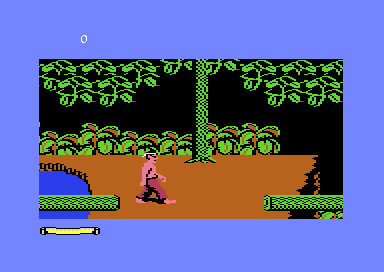
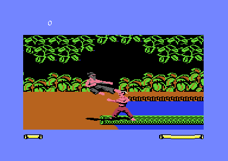
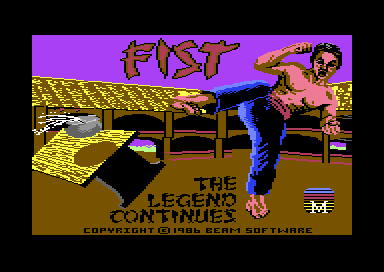

<meta charset="utf-8">
<meta name="viewport" content="width=device-width, initial-scale=1">
<title>Fist II: The Legend Continues</title>
<link rel="preconnect" href="https://fonts.googleapis.com">
<link rel="stylesheet" href="https://fonts.googleapis.com/css2?family=Lato:wght@400;700;900&family=IBM+Plex+Mono:wght@400;500&display=swap">
<link rel="stylesheet" href="reference/fist-page.css">
<!-- tabs -->
<header class="hero">
  <p class="eyebrow">Commodore 64 · 1986 · Beam Software</p>
  <h1>Fist II: The Legend Continues</h1>
  <p class="sub">Beam Software followed <i>The Way of the Exploding Fist</i> with a journey through jungles, temples, and caves. The punches and kicks now serve a longer quest: find the masters’ scrolls and learn enough to reach the Warlord’s volcanic stronghold.</p>
</header>
<main class="wrap">
  <section id="adventure">
    <p class="fig">01 · The adventure</p>
    <h2 class="t">Beyond the dojo</h2>
    <p>A young disciple sets out to free a land ruled by the Warlord. The masters of the Exploding Fist have hidden their knowledge on eight scrolls, each belonging to a meditation chamber somewhere in the realm. Finding a scroll is only half the task. You must carry it to its chamber before its power becomes yours. <a href="about.html#src-1">The manual</a> supplies the story and hints at what each scroll teaches.</p>
    <figure class="fist-shot"><figcaption>The adventure begins beside a jungle pool. The energy bar at the lower left must last beyond the next fight.</figcaption></figure>
    <p>The world opens as you learn. Stone heaps that once blocked a path can be smashed; trees can be kicked down. Other scrolls bring light to dark rooms or protection against poisonous chambers. Exploring means remembering places you could not pass and finding your way back with the knowledge they require.</p>
    <p>The Warlord’s men interrupt that exploration with one-to-one fights. Joystick directions produce punches, sweeps, and kicks, with the fire button changing the move. Energy carries over between encounters and slowly recovers. Meditation refills the bar and can increase its capacity according to how many opponents you have beaten.</p>
    <figure class="fist-shot"><figcaption>A hooded opponent launches a flying kick in the opening jungle. This capture was made with the hero’s energy held up while playing.</figcaption></figure>
  </section>
  <section id="release">
    <p class="fig">02 · The makers</p>
    <h2 class="t">Making a different sequel</h2>
    <p>Melbourne studio Beam Software had already found success with Gregg Barnett’s <i>The Way of the Exploding Fist</i>. For its sequel, Barnett later recalled, “it would have been easy to just reskin the original game”. His recollection, quoted by <a href="about.html#src-10">Super Chart Island</a>, places that familiar option beside the much larger adventure Beam made.</p>
    <p>Programmer Nigel Spencer described the result as the original fighting engine combined with a platform game. His <a href="about.html#src-12">C64.com interview</a> also recalls the screen editor and the work of fitting the levels into memory. The landscape needed tools for arranging it as well as artists to draw it.</p>
    <p>The British cassette manual credits Barnett with design and programming, Greg Holland with backgrounds and scenery, and Russel Comte with character animation and sprites. It credits Nigel Spence, Trevor Nuridin, and Bruce Bayley with “graphic arrangements”. The tools receive their own recognition: David Johnston’s Character Editor and Nigel Spencer’s Map Editor. The manual prints Spence in the arrangements credit and Spencer beside the editor.<sup class="fn"><a href="about.html#src-1" title="The C64 manual">1</a></sup></p>
    <p>Neil Brennan composed the music, while Bayley supplied the sound effects. Brennan’s <a href="about.html#src-14">account of working at Beam</a> describes cofounder Fred Milgrom discussing characters, artwork, and the musical feeling he wanted before Brennan developed themes on a four-track recorder. That interview describes his broader working method rather than Fist II specifically. In Fist II, three tunes accompany different parts of the world; <a href="music.html">all three can be heard here</a>.</p>
  </section>
  <section id="reception">
    <p class="fig">03 · The reception</p>
    <h2 class="t">A divided reception</h2>
    <p>Melbourne House published the British release as <i>Fist II: The Legend Continues</i>. Mindscape’s American edition shortened the title to <i>Fist: The Legend Continues</i>.<sup class="fn"><a href="about.html#src-7" title="Release sources">7</a></sup> The Mindscape disk is the edition examined on these pages.</p>
    <figure class="fist-shot"><figcaption>The American loading picture uses the shorter title and carries Mindscape’s logo beneath the fighter.</figcaption></figure>
    <p>Fist II topped the combined UK formats chart for one week in October 1986. Contemporary C64 reviewers disagreed over the sequel. Commodore User’s Ken McMahon expected “the definitive Kung Fu classic”, while Your Commodore welcomed the decision to build a quest around the combat. Zzap!64’s Julian Rignall thought the game unfinished and overpriced; fellow reviewer Gary Penn called it “basically a big disappointment”. <a href="about.html#src-10">Super Chart Island</a> collects those reviews and the chart record.</p>
    <p>The quest changes what success means. Winning a fight leaves you with the larger problem of where to go, which scroll to seek, and how to survive the journey to its chamber. A separate Training program retains organised bouts, including two-player competition.<sup class="fn"><a href="about.html#src-9" title="The Mindscape manual">9</a></sup> This site follows the Adventure.</p>
  </section>
  <section id="explore">
    <p class="fig">04 · Inside the game</p>
    <h2 class="t">What the scrolls change</h2>
    <p>The scrolls’ cryptic promises become more concrete when matched to the game’s rules. One supposedly grants calm and poise. Its practical effect is to narrow a crevice enough for the hero to somersault across. Another offers protection from danger: without that knowledge, dropping through the floor below the volcano empties the hero’s energy. With it, the drop becomes the entrance.<sup class="fn"><a href="solution.html#gives" title="What the scrolls give">↗</a></sup></p>
    <p>Those rules explain why a familiar-looking place can become passable later. They also give the map a purpose beyond showing where rooms connect.</p>
    <ul>
      <li><a href="levels.html">Explore the world map</a>, with its scrolls, chambers, and connecting paths.</li>
      <li><a href="solution.html">Follow the scroll-by-scroll solution</a>, including the crevice and the approach to the volcano.</li>
      <li><a href="gameplay.html#controls">Try the animated fighting controls</a>, or <a href="graphics.html#cast">compare the fighters’ shared animation</a>.</li>
    </ul>
    <p class="overview-note">The <a href="about.html#sources">About page</a> retains the full source register and distinguishes the editions and evidence used.</p>
  </section>
</main>
